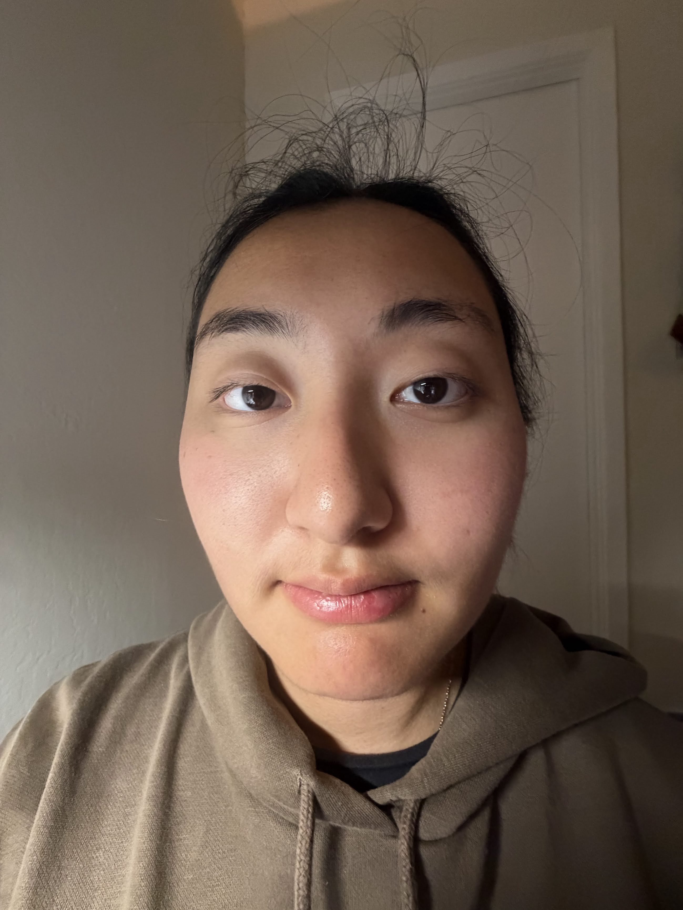
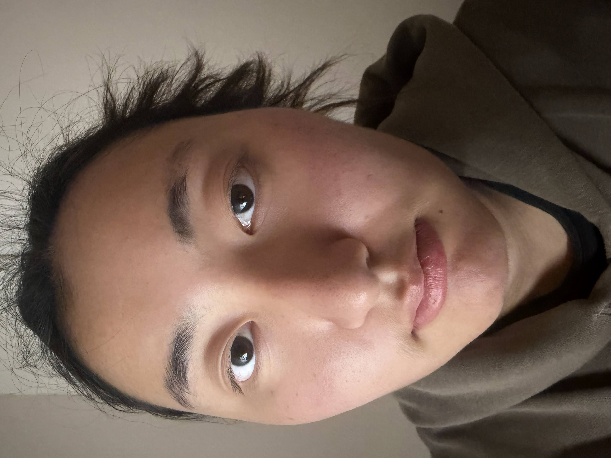
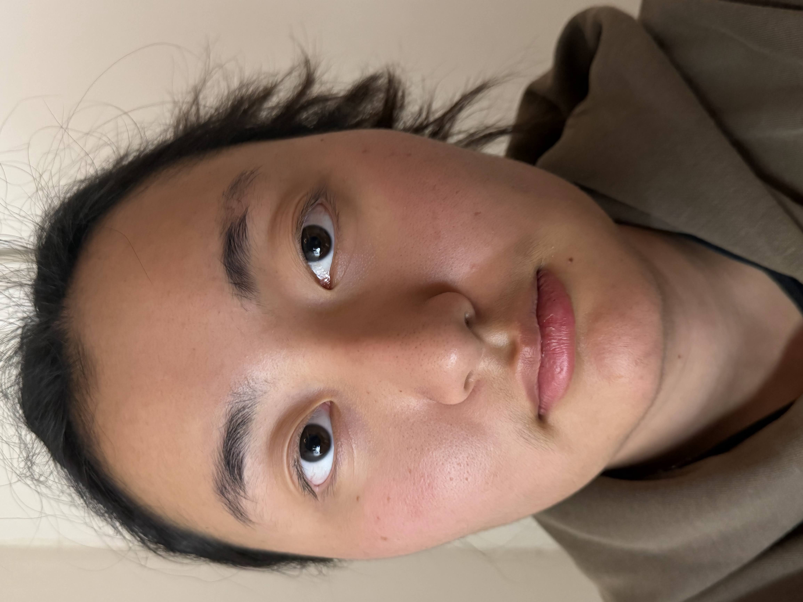
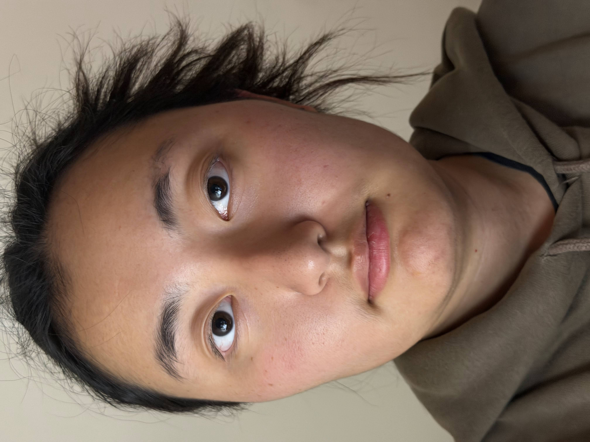
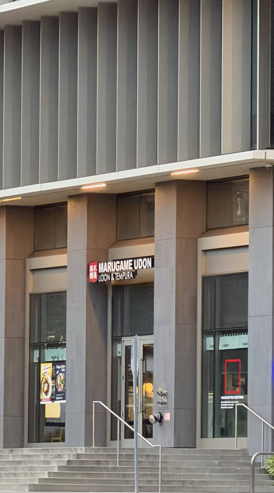
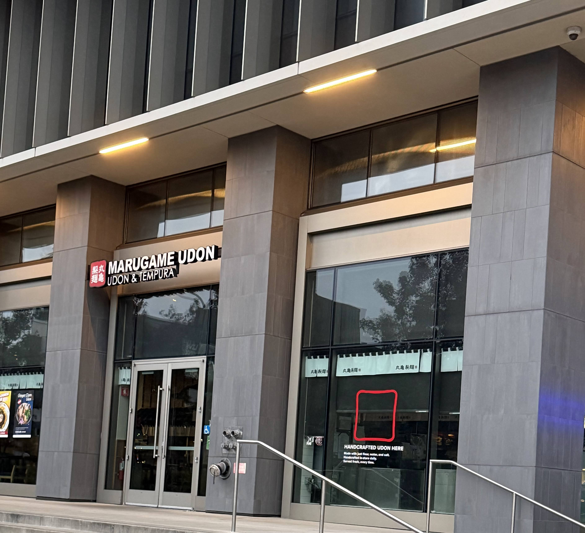
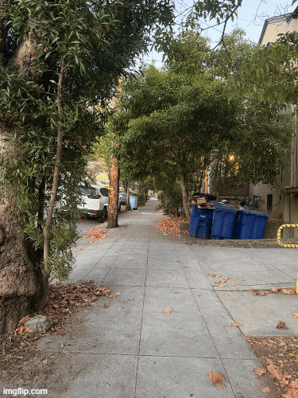

Project 0
Part 1: Selfies; The Wrong Way vs The Right Way
The human face(and, really, any object) gets viewed as a series of 2D images. As you get closer to a person, the ratio of the distance between your eyes to their ears and between your eyes to their noes increases which is what causes 3D objects' dimensions to become more prominent.





Part 2: Architectural Perspective Compression
Same idea as the selfie, but on a larger object.


Part 3: The Dolly Zoom

You can sort of see the dolly effect on some of the pictures in the gif. The video showcases it a little better but it is pretty hard to hold a phone steady.